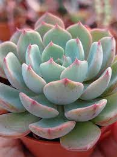

Mussum Ipsum, cacilds vidis litro abertis. Leite de capivaris, leite de mula manquis sem cabeça.Viva Forevis aptent taciti sociosqu ad litora torquent.A ordem dos tratores não altera o pão duris.Posuere libero varius. Nullam a nisl ut ante blandit hendrerit. Aenean sit amet nisi.
Quem num gosta di mé, boa gentis num é.Interagi no mé, cursus quis, vehicula ac nisi.Si u mundo tá muito paradis? Toma um mé que o mundo vai girarzis!Suco de cevadiss, é um leite divinis, qui tem lupuliz, matis, aguis e fermentis.
Quem manda na minha terra sou euzis!Mé faiz elementum girarzis, nisi eros vermeio.Si num tem leite então bota uma pinga aí cumpadi!Atirei o pau no gatis, per gatis num morreus.
Suco de cevadiss deixa as pessoas mais interessantis.Mauris nec dolor in eros commodo tempor. Aenean aliquam molestie leo, vitae iaculis nisl.Leite de capivaris, leite de mula manquis sem cabeça.Mé faiz elementum girarzis, nisi eros vermeio.
Si num tem leite então bota uma pinga aí cumpadi!Cevadis im ampola pa arma uma pindureta.Interessantiss quisso pudia ce receita de bolis, mais bolis eu num gostis.Não sou faixa preta cumpadi, sou preto inteiris, inteiris.
